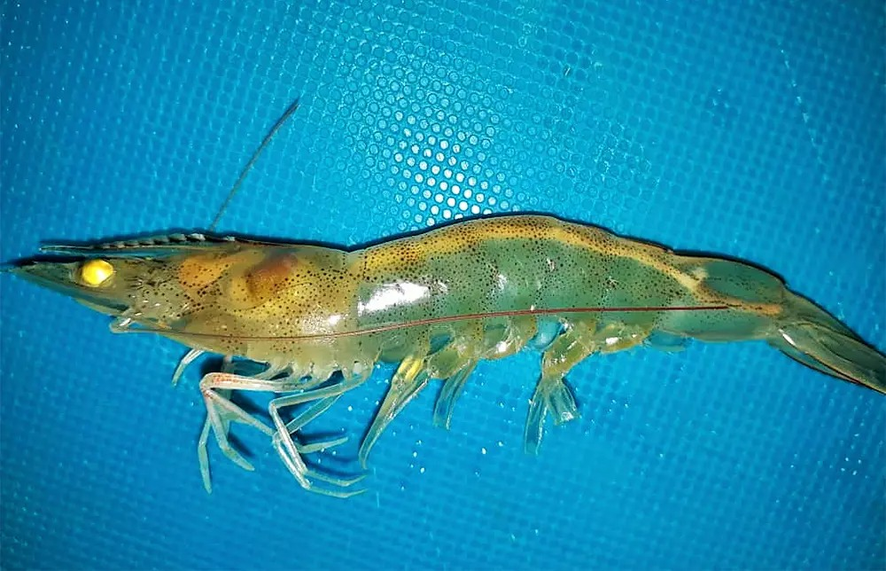
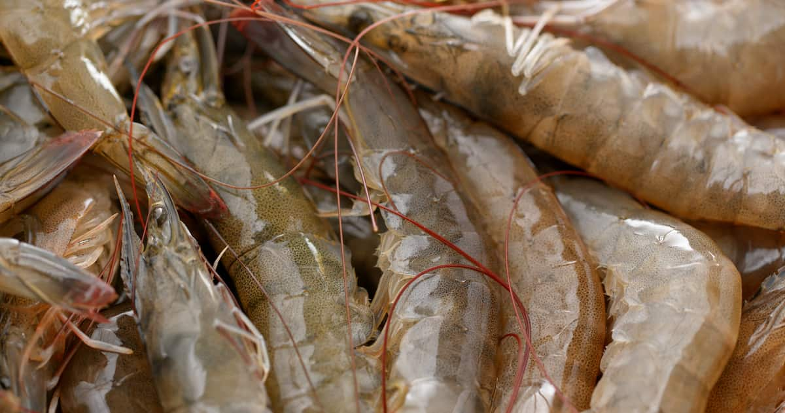
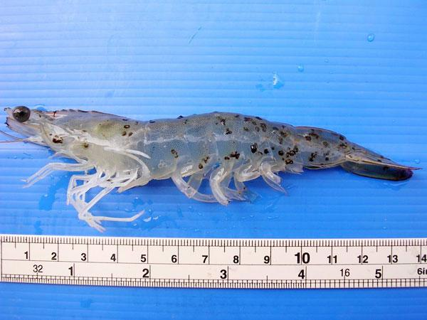

Page 4 – Diseases in Aquaculture
Common Diseases • Symptoms • Precautions • Management
General Diseases in Aquaculture (Prawns)
Disease outbreaks are one of the biggest risks in prawn farming and can cause heavy economic losses. Below are the major diseases observed in the study area.
1. White Gut Disease
White Gut is a common problem in prawn farms. The digestive tract of the prawn becomes white or empty instead of the normal brown/orange color.
Symptoms:
- White or empty gut visible through the body
- Reduced feeding
- Slow growth
- Weakness and lethargy

White Gut infected prawn
2. Vibriosis
Vibriosis is a bacterial disease caused by Vibrio species. It is one of the most common bacterial infections in prawn aquaculture.
Symptoms:
- Reddish discoloration of the body
- Black spots on the shell
- Loose shell
- Reduced feeding and high mortality

Prawns affected by Vibriosis
3. Black Spot Disease
Black Spot disease appears as dark melanized spots on the body and shell of the prawn. It is often linked to bacterial infection or shell damage.
Symptoms:
- Black or dark spots on the body and shell
- Shell damage or erosion
- Reduced market value
- Can lead to secondary infections

Prawn showing Black Spot symptoms
4. EHP (Enterocytozoon hepatopenaei)
EHP is a microsporidian parasite that infects the hepatopancreas of prawns. It causes severe growth retardation and size variation in the pond.
Symptoms:
- Very slow growth
- Large size variation in the same pond
- White/opaque hepatopancreas
- Reduced feed intake

EHP – Size variation in one infected pond
Explanation – Why Diseases Occur
- High stocking density and intensive culture increase stress.
- Poor water quality (high ammonia, low oxygen, sudden salinity/pH changes).
- Introduction of infected seed or contaminated water.
- Inadequate biosecurity and shared equipment between ponds.
- Nutritional deficiencies weakening the immune system of prawns.
Precautionary Measures
- Use only certified SPF (Specific Pathogen Free) seed.
- Practice strict biosecurity – limit visitors, disinfect equipment, use bird nets.
- Maintain optimal water quality parameters through regular testing.
- Avoid overfeeding and remove uneaten feed and waste.
- Use probiotics to improve water and gut health.
- Keep detailed farm records for early detection of problems.
Medicine / Methods Used to Recover
Important: Most viral and parasitic diseases have no direct cure. Management focuses on prevention and supportive care.
- Probiotics (beneficial bacteria such as Bacillus) – widely used to suppress harmful bacteria.
- Water exchange / dilution and improvement of aeration when parameters deteriorate.
- Immunostimulants and vitamin supplements in feed (as recommended by technical experts).
- Antibiotic use is restricted and must follow national regulations.
- Early harvesting of remaining healthy stock may be advised when an outbreak is severe.
Farmers should consult local fisheries officers, MPEDA / CIBA guidance, or qualified aqua-technicians before applying any treatment.